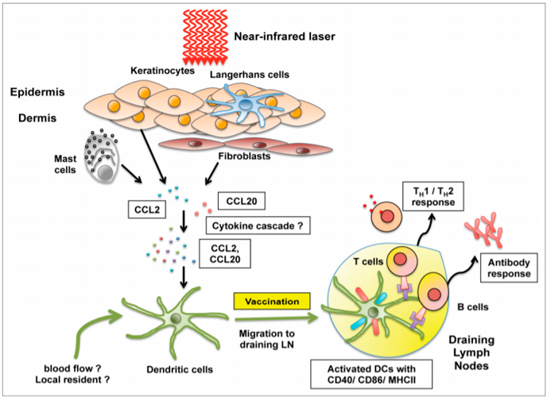

Fig. 3. Relative AUC (decentralized to centralized) and worst balance ratio of our method for different robot counts. The worst balance ratio is the ratio of the busy-ness of the most queried robot compared to what it would be if the feature-to-cluster assignments were perfectly balanced. Results are averaged over 10 runs and dots indicate the results of the individual runs.
20 march 2014
Emerging issues in radiogenic cataracts and cardiovascular disease
PhD Astro Physics, University of Texas
sponcored by:
Min Zhu, Jiaming Yu, Oliver Tadeski.
fund this
In this paper, we discuss the adaptation of our decentralized place recognition method described in [1] to fullimage descriptors. As we had shown, the key to making a scalable decentralized visual place recognition lies in exploting deterministic key assignment in a distributed key-value map. Through this, it is possible to reduce bandwidth by up to a factor of n, the robot count, by casting visual place recognition to a key-value lookup problem. In [1], we exploited this for the bagof-words method [3], [4]. Our method of casting bag-of-words, however, results in a complex decentralized system, which has inherently worse recall than its centralized counterpart. In this paper, we instead start from the recent full-image description method NetVLAD [5]. As we show, casting this to a key-value lookup problem can be achieved with k-means clustering, and results in a much simpler system than [1]. The resulting system still has some flaws, albeit of a completely different nature: it suffers when the environment seen during deployment lies in a different distribution in feature space than the environment seen during training.
I. Introduction
Over the past three plus decades, the International Commission on Radiological Protection (ICRP) has classified radiation effects into tissue reactions (previously called non-stochastic or deterministic effects) and stochastic effects [1]. By definition, tissue reactions result from injury to populations of cells, and are characterized by a threshold below which no effect would occur. Typical examples are cataracts and non-cancer skin changes, the severity of which increases with dose [2]. In contrast, injury to a single cell or small number of cells is supposed to cause stochastic effects, and its probability but not severity is regarded as a linear-non-threshold (LNT) function of dose. Stochastic effects comprise cancer and heritable effects due to somatic cell mutations and germ cell mutations, respectively [2]. In the context of radiation rotection (RP), equivalent dose limits aim to prevent tissue reactions, whereas effective dose limits aim to reduce the risks of stochastic effects to the extent reasonably achievable [2]. Human radiation cataracts appeared in the literature as far back as 1903 [3], but atomic-bomb (A-bomb) and cyclotron cataracts observed in the late 1940s created a surge of interest in RP of the ocular lens [4, 5]. The ICRP listed cataracts as a radiation health hazard in 1950 [6] and recommended the first dose limit for the lens in 1954 [7]. The belief that cataracts result from a tissue reaction with a threshold dates back to 1969 [8], and the occupational dose limit recommended for the past few decades was calculated as a chronic dose threshold for vision-impairing cataract (VIC).
In [1], we have shown how the data exchange incurred in decentralized visual place recognition can be reduced by a factor of up to n, the robot count. This can be achieved by casting the place recognition problem to a keyvalue lookup problem, which can be efficiently distributed using deterministic key-to-peer assignment, as is for example common in distributed hash tables [6], [7]. In [1], we have thus cast the bag-of-words (BoW) place recognition method [3], [4] used in [8], [9]. In broad strokes, this is how the resulting method works:
- Before deployment, deterministically assign words of the visual vocabulary to the different robots.
- When querying place recognition of an image frame, calculate the BoW vector and split it up into partial BoW vectors such that one partial BoW vector can be sent to each robot r, containing the coefficients of the words assigend to r.
- The robots receive and process each their own partial query, returning the identity of the single frame which best matches the query frame according to the partial BoW vector. They also store the query, making it available as a result for subsequent queries.
- Gather all partial results and determine which frame is most consistently returned as result.
We have shown that this methods results in a bandwidth reductionof up to n (depending on the network infrastructure), while reducing recall by 10 − 20% depending on the robot count. A lot of the recall reduction is due to steps 3) and 4) of the method, which are based on a simplifying assumption that we do not yet fully understand. See Sec. IV C. and Fig.4 of [1] for a detialed discussion.
III. Experiments
In this whitepaper, we instead propose to use a full-image descriptor place recognition method as a basis. In particular, we use the recent, deep-learning based NetVLAD method [5] which has been shown to perform excellently even under severe appearance and viewpoint changes. Indeed, as can be seen in the centralized evaluation of this method (Fig. 1), its recall qualitatively looks better than the one of the BoW method we used in [1]. NetVLAD uses a deep neural network to calculate a low-dimensional feature vector ~v ∈ R d from an input image. Place matches can then be found by looking for the nearest vectors of other images according to the `2 distance.
Fig. 2. We evaluate the place recognition performance using the areaunder-curve measure (AUC) of the precision-recall curve, since we don’t apply geometric verification. As we can see, NetVLAD exhibits excellent precision for the most part. We furthermore see how the clustering of the decentralized method results in reduced recall.
Since this is preliminary work, we use a simpler evaluation methodology than the one in [1]: firstly, we don’t actully implement the method on multiple processes as we did there. It is evident form the method that it needs n times less data exchange than if all queries were sent to all robots. To evaluate the place recognition performance the method would have if deployed on a group of robots, we simply exclude all images that are not in the same cluster as the query from the pool of possible responses to a query. Secondly, we don’t perform geometric verification. To keep a fair evaluation, we evaluate precision
Since this is preliminary work, we use a simpler evaluation methodology than the one in [1]: firstly, we don’t actully implement the method on multiple processes as we did there. It is evident form the method that it needs n times less data exchange than if all queries were sent to all robots.
To evaluate the place recognition performance the method would have if deployed on a group of robots, we simply exclude all images that are not in the same cluster as the query from the pool of possible responses to a query. Secondly, we don’t perform geometric verification. To keep a fair evaluation, we evaluate precision and recall for all possible feature vector distance thresholds and consider the area under that curve (AUC) as metric for place recognition performance, see Fig. 2. We use then NetVLAD feature vector dimension d = 128 (tunable thanks to a final layer that does principal component analysis). The method is evaluated on KITTI 00 [11] by splitting the sequence into n subsequences, one per robot.
Fig. 2. We evaluate the place recognition performance using the areaunder-curve measure (AUC) of the precision-recall curve, since we don’t apply geometric verification. As we can see, NetVLAD exhibits excellent precision for the most part. We furthermore see how the clustering of the decentralized method results in reduced recall.

Pic. 1. We evaluate the place recognition performance using the areaunder-curve measure (AUC) of the precision-recall curve, since we don’t apply geometric verification. As we can see, NetVLAD exhibits excellent precision for the most part. We furthermore see how the clustering of the decentralized method results.
II. Methodology
Since this is preliminary work, we use a simpler evaluation methodology than the one in [1]: firstly, we don’t actully implement the method on multiple processes as we did there. It is evident form the method that it needs n times less data exchange than if all queries were sent to all robots. To evaluate the place recognition performance the method would have if deployed on a group of robots, we simply exclude all images that are not in the same cluster as the query from the pool of possible responses to a query. Secondly, we don’t perform geometric verification. To keep a fair evaluation, we evaluate precision and recall for all possible feature vector distance thresholds and consider the area under that curve (AUC) as metric for place recognition performance, see Fig. 2. We use then NetVLAD feature vector dimension d = 128 (tunable thanks to a final layer that does principal component analysis). The method is evaluated on KITTI 00 [11] by splitting the sequence into n subsequences, one per robot.
fund this
References
- Cox JC, Coulter AR. Adjuvants--a classification and review of their modes of action. Vaccine 1997; 15:248-56; PMID:9139482; http://dx.doi. org/10.1016/S0264-410X(96)00183-1
- Harandi AM, Davies G, Olesen OF. Vaccine adjuvants:scientific challenges and strategic initiatives. ExpertRev Vaccines 2009; 8:293-8; PMID:19249971;http://dx.doi.org/10.1586/14760584.8.3.293
- Leroux-Roels G. Unmet needs in modern vaccinology:adjuvants to improve the immune response. Vaccine 2010; 28(Suppl 3):C25-36; PMID:20713254;http://dx.doi.org/10.1016/j.vaccine.2010.07.021
- Perrie Y, Mohammed AR, Kirby DJ, McNeil SE, Bramwell VW. Vaccine adjuvant systems: enhancing the efficacy of sub-unit protein antigens. Int J Pharm 2008; 364:272-80; PMID:18555624; http://dx.doi. org/10.1016/j.ijpharm.2008.04.036
- Cox JC, Coulter AR. Adjuvants--a classification and review of their modes of action. Vaccine 1997; 15:248-56; PMID:9139482; http://dx.doi. org/10.1016/S0264-410X(96)00183-1
- Harandi AM, Davies G, Olesen OF. Vaccine adjuvants:scientific challenges and strategic initiatives. ExpertRev Vaccines 2009; 8:293-8; PMID:19249971;http://dx.doi.org/10.1586/14760584.8.3.293
- Leroux-Roels G. Unmet needs in modern vaccinology:adjuvants to improve the immune response. Vaccine 2010; 28(Suppl 3):C25-36; PMID:20713254;http://dx.doi.org/10.1016/j.vaccine.2010.07.021
- Perrie Y, Mohammed AR, Kirby DJ, McNeil SE, Bramwell VW. Vaccine adjuvant systems: enhancing the efficacy of sub-unit protein antigens. Int J Pharm 2008; 364:272-80; PMID:18555624; http://dx.doi. org/10.1016/j.ijpharm.2008.04.036